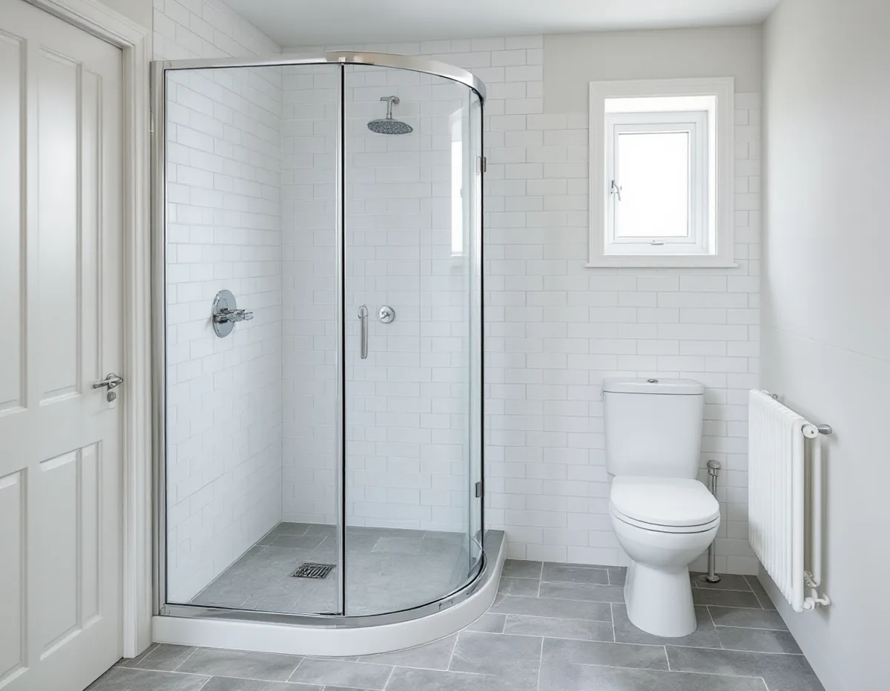
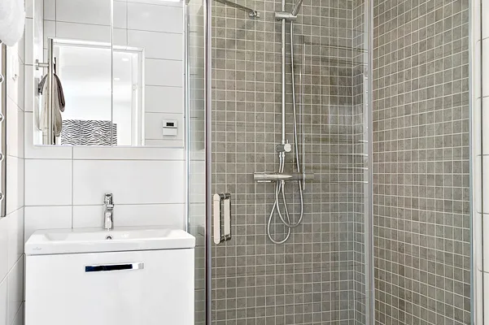

Platsbesök
Vi ser rummet, golvbrunnen och ledningarna och frågar hur bostaden ägs.
Hässelby villastad är till största delen en stadsdel av egna hus, men här finns också radhus och lägenheter i bostadsrätt. Vilka regler som gäller för badrummet beror på hur du äger bostaden och var i huset rummet ligger. Geal Entreprenad AB river, bygger tätskikt och ytskikt och samordnar VVS och el, med gratis platsbesök och skriftligt kostnadsförslag.

Enligt stadens områdesfakta fanns det 7 029 bostäder i Hässelby villastad 2025, och 5 009 av dem låg i småhus. De allra flesta småhusen, 4 757, var äganderätter, men 204 småhus var bostadsrätter, och totalt fanns 794 bostadsrätter i stadsdelen.
I en villa eller ett radhus med äganderätt beslutar du själv om badrummet, men du ansvarar också för ledningarna på tomten. Stockholm Vatten och Avfall skriver att fastighetsägaren bekostar läckor, stopp och reparationer inom den egna fastigheten och att ansvaret går över till dem vid förbindelsepunkten.
Bor du i bostadsrätt, i ett radhus eller en lägenhet, är det föreningen som äger huset. Enligt bostadsrättslagen 7 kap. 7 § får du inte utan styrelsens tillstånd göra ingrepp i bärande konstruktion, installera eller ändra ledningar för avlopp, värme, gas eller vatten eller ändra ventilationen. Styrelsen får säga nej bara om åtgärden är till påtaglig skada eller olägenhet för föreningen, och den som är missnöjd kan begära att hyresnämnden prövar frågan.

Ett badrum i källaren ligger lägst i huset och är det rum som först får vatten vid översvämning. Stockholm Vatten och Avfall påpekar att det kan hända även i torrt väder, och då handlar det ofta om en vattenläcka eller ett avloppsstopp.
I checklistan för att förebygga översvämningar råder SVOA att golvet i källaren ska vara av ett material som tål vatten och att du ska ha tunga, tättslutande föremål som sandsäckar till hands att lägga över golvbrunnar och toalettstolar. Takvatten från stuprör bör inte ledas till avloppsledningen, dräneringen och fuktskyddet på väggar under mark ska vara täta och marken ska luta från huset.
Samma råd gäller när ett källarbadrum byggs om. Klinker, tätskikt och en golvbrunn med rätt fall tål vatten bättre än en matta på ett gammalt betonggolv, men de hjälper inte om vattnet kommer upp genom brunnen. Därför ser vi också över stuprören och marken runt huset, se takläggare i Hässelby.
En backventil sitter på servisledningen och ska hindra avloppsvatten från gatan att tränga in genom golvbrunnar och andra avloppsenheter. På SVOA:s sida om backventiler står att du som kund får installera en på eget initiativ, men att den kräver ingrepp i ledningssystemet och inte passar i alla anläggningar. Du ansvarar själv för den.
Innan ventilen sätts in måste du veta att det inte finns egna dagvattenanslutningar på samma ledning. När ventilen är stängd kommer det vattnet annars inte ut, och inte heller avloppsvattnet från ditt eget hus. En backventil behöver dessutom regelbunden tillsyn enligt tillverkarens anvisning, och en dåligt skött ventil kan i värsta fall ge större skada.
Många villor i Hässelby villastad ersattes på 1960- och 70-talen av grupper av enhetliga småhus. Ett badrum som inte har rivits sedan dess kan innehålla material från byggtiden. Arbetsmiljöverket skriver att asbest i bostadshus kan finnas i väggar, golv och tak, och att det krävs tillstånd för att riva eller sanera material som innehåller asbest. Ansökan ska göras åtta veckor innan arbetet börjar.
Är vi osäkra på vad mattor, fix eller skivor innehåller tar vi prov innan något rivs, och sanering görs av ett företag med tillstånd. Stockholms stad påminner om att flytt av ett badrum inte kräver bygglov, men att en anmälan behövs om ventilationen ändras väsentligt eller om en ny VA-stam dras i ett nytt schakt.
Fasaderna och färgerna i stadsdelen beskrivs under målare i Hässelby.
Vi ser rummet, golvbrunnen och ledningarna och frågar hur bostaden ägs.
Misstänkta material provas före rivning, och vi ser över stuprör och mark vid källarbadrum.
Rivning, tätskikt, VVS, el och ytskikt står som separata poster i ett skriftligt förslag.
Rummet rivs till stommen, och golvet får fall mot en ny golvbrunn.
Tätskikt enligt branschreglerna, och behöriga installatörer drar rör och el.
Kakel och porslin monteras, och du får dokumentationen för huset eller föreningen.
Rotavdraget är 30 procent av arbetskostnaden, högst 50 000 kr per person och år och högst 75 000 kr tillsammans med rutavdrag. I en bostadsrätt gäller det bara arbete inne i lägenheten.
Material ger inget avdrag. Geal drar avdraget direkt på fakturan.
Om badrummet ligger i källaren, om golvbrunn och ledningar byts, om äldre material behöver saneras och vilka ytskikt du väljer. Platsbesöket är gratis, och du får ett skriftligt kostnadsförslag.
Tätskikt, golvbrunn, el, VVS och intyg.
Badrumsrenovering i Stockholm →Takbyte, takbesiktning och plåtarbeten.
Takläggare i Hässelby →Villastaden, Hässelby strand och gård.
Takrenovering i Hässelby →Styckade tomter, gränser och kartan.
Attefallshus i Hässelby →Riva, bygga nytt och delad tomt.
Byggföretag i Hässelby →Villastaden och radhusen.
Fasadmålning i Hässelby →Villastad, sommarstugor och grupphus.
Fasadrenovering i Hässelby →Villor, radhus och grupphus.
Fönsterbyte i Hässelby →Radhusen i Hässelby gård.
Fönsterrenovering i Hässelby →Slipa trägolvet – eller lägga nytt.
Golvläggare i Hässelby →Golvet under mattan.
Golvslipning i Hässelby →Villastad, grupphus och radhus i Hässelby.
Målare i Hässelby →Plåttak efter eternit, rännor och beslag i Hässelby.
Plåtslagare i Hässelby →Altan, bod och plank i villastaden och radhusen.
Snickare i Hässelby →Eternit och asbest på taket.
Takbyte i Hässelby →Ny tapet i grupphus och villor.
Tapetsering i Hässelby →Hus som vuxit i omgångar.
Tillbyggnad i Hässelby →Grupphusen, eterniten och ventilationen.
Totalrenovering i Hässelby →